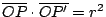
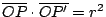
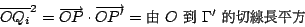
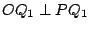
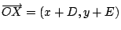

| |
所有歐氏平面的保長變換當然都是保圓保角的，但是除了它們之外是否還有不保長的保圓保角變換呢？再者，在歐氏平面的保長變換之中，對于一條給定直線的反射對稱則是其中的至精至簡者；所有其他保長變換都可以由它們組合而得，在保圓保角變換的範疇中是否也有同樣的精簡事物呢？上述對于直線的反射對稱在保圓保角變換的範疇中是否可以適當地推廣成對于一個圓的反射對稱呢？為此，讓我們先來做一些溫故知新的工作，改用圓與角的觀點再來分析一下對于一條直線的反射對稱的幾何特徵。再者，在以後的討論中，我們將把直線看做是圓的特例，亦即半徑是無窮大的圓。這樣做可以使得往後的討論和敘述變得更加整齊劃一、更具統一性，例如原先的「不共線三點定一圓」在新觀點之下就變成一律的「三點定一圓」。
【分析】：
(i) 如 [圖 6-8] 所示，P, P' 是對于直線  成反射對稱的任給一對點偶，亦即 是線段
的垂直平分線。由此可見，任何過 P,
P' 點的圓，如 [圖 6-8] 所示的 成反射對稱的任給一對點偶，亦即 是線段
的垂直平分線。由此可見，任何過 P,
P' 點的圓，如 [圖 6-8] 所示的  , ,  等，其圓心總是位于
之上，因此都是和 互相正交的。反之，若過相異兩點 P, P' 的任何一個圓總是和 正交，則 P, P' 必定和 成反射對稱。 等，其圓心總是位于
之上，因此都是和 互相正交的。反之，若過相異兩點 P, P' 的任何一個圓總是和 正交，則 P, P' 必定和 成反射對稱。
[ 圖 6-8 ]
由此可問：對于一個定圓 Γ 和不在圓上的一點 P 是否會存在一個點 P'
使得任何過 P, P' 點的圓總是和圓 Γ 互相正交呢？
(ii) 假設果真存在有這樣的一個點 P'，則直線 PP' 乃是過 P, P' 的圓的一個特例，所以應該是和 Γ 互相垂直的，因此這個假設中的 P' 應該在 O, P
連線之上（我們且先把 P 點和 Γ 的圓心 O 點相重的情形除外）
。再者，設 A 點是
的中點， 是以
為直徑的圓，亦即以 A 點為圓心，
為半徑者也。由所設它和 Γ 正交于兩點 Q1, Q2（如 [圖 6-9] 所示）。由此可見，AQi 是圓 Γ 的切線，而 OQi 則是 的切線。再由圓冪定理即得
[ 圖 6-9 ]
上述分析說明了：設 而且不在圓 Γ 之上，假設存在有它的
「對稱點」P' ，則它必須就是那個在射線
 之上而且
 的點。下述引理則証明這樣的 P'
點，的確是具有所要求的性質者。 之上而且
 的點。下述引理則証明這樣的 P'
點，的確是具有所要求的性質者。
【引理】：設 Γ 是一個以 O 點為圓心，r 為半徑的圓，O, P,
P' 三點共線而且
，則任何過 P, P' 的圓都是和 Γ 互相正交的。
証明：設  是任給一個過 P, P' 的圓，交 Γ
于 Qi, i=1,2 。由所設，即有 是任給一個過 P, P' 的圓，交 Γ
于 Qi, i=1,2 。由所設，即有
[ 圖 6-10 ]
再者，由圓冪定理，

亦即
和切線等長，所以 Qi 就是直線 OQi 和
的唯一交點，即 OQi 本身就是一條由 O 到 的切線，所以
Γ 和 正交于 Qi 。
□
【定義】：對于給定圓
和任意點 ，那個在射線
之上而且滿足
的唯一的 P' 點叫做 P 點對于 Γ 的反射對稱點。
[註]：(i) 當 P 點位于圓 Γ 之上時，其對稱點就是其本身，亦即 P=P'；反之亦然，即
。
(ii) 在平面 Π 上，圓心 O 點對于 Γ 的對稱點暫無定義。若我們把平面
Π 添加一個無窮遠點 ，而且把它定義為和圓心互相對稱之點，則一條直線可以當作是過 點的圓。在這種看法之下，我們可以証明上述對于
Γ 的反射對稱在這個加點平面上是既保圓又保角的。
【例 1】：對稱點的作圖法
設 P, P' 是一對對于 Γ 成反射對稱之點。則 P, P' 和 Γ
之間有如
[圖 6-11] 所示的幾何結構，即有 ,
,
。由此可見求作對稱點的下述作圖法：
- (i)
- 若 P 點在圓外：連結 OP，以 為直徑作圓
，交 Γ 于 Q1, Q2 點，連結
 交
于 P' 點，P' 點即為所求作的 P 點對于 Γ 的對稱點。 交
于 P' 點，P' 點即為所求作的 P 點對于 Γ 的對稱點。
[ 圖 6-11 ]
- (ii)
- 若 P' 點在圓內：連結 OP'，過 P' 點作
OP' 垂線 ，交 Γ 于 Q1, Q2 點，過 Q1
點作 OQ1 的垂線，交 OP' 于 P 點，它即為所求作的對稱點。
【例 2】：設 , 是兩個給定的圓，
，試作一圓 Γ 它過 P 點而且和
, 都正交。
[ 圖 6-12 ]
解：令 P1' 和 P2' 分別是 P 點對于 ,
的反射對稱點。則由 P, P1', P2' 所定的圓 Γ 即為所求者。
[試証上述 Γ 是過 P 點且和 , 正交的唯一的圓。]
【例 3】：設 , 是兩個相離或相含的圓，亦即
，試問在所有和 ,
都正交的圓系中是否有一個唯一的最小者，亦即其半徑為極小者？若有，則試討論其作圖法。
解：先討論相離的情形：
[ 圖 6-13 ]
如 [圖 6-13] 所示，設 Γ 是任給一個正交于 ,
的圓，連結
，它和 Γ 相交于 P1, P2 點，則
P1, P2 對于 和 都是互相對稱的。即有
令
,
,
，則上述條件就可以改用下述代數聯立方程式加以表達，亦即
由此可見，上述交點 P1, P2 是唯一確定的（和 Γ 的選取無關）而且可以用軌尺作圖求得者。再者，和 , 正交的圓系也就是過
P1, P2 點的圓系，其中半徑最小者顯然就是那個以
 為直徑者。
為直徑者。
相含情形基本上和上述相離的的情形相似，所不同者只是 P1, P2 和 O1, O2
之間的相對位置改為 [圖 6-14] 所示的情況，其討論則留作習題。
[ 圖 6-14 ]
共軸圓系：
設 , 是給定兩個相異的圓，其方程式分別為
則以
k1(x2+y2+2D1x+2E1y+F1)+k2(x2+y2+2D2x+2E2y+F2)=0
為其方程式之圓乃是隨著比值 k1:k2 之不同而相異。它們組成一個圓系
(family of circles)，稱之為由 ,
所產生的共軸圓系
(co-axial family of circles)，易見它包含一條直線，亦即 k1:k2=-1
者，其方程式就是
2(D1-D2)x+2(E1-E2)y+(F1-F2)=0
【習題】：
- (1)
- 試驗証上述共軸圓系中任何相異的兩個圓的等冪軸就是直線
2(D1-D2)x+2(E1-E2)y+(F1-F2)=0
[這也就是「共軸」這個名稱的來由。]
- (2)
- 設 和 相交于 P, Q
兩點，試証上述共軸圓系也就是所有過 P, Q 點的圓所組成者（包括直線
PQ，它其實是就是它們所共有之等冪軸）。
- (3)
- 設 和 相切于 A
點，試証上述共軸圓系也就是共切于 A
點的圓所組成者，而它們的公切線也就是其所共有之等冪軸。
由此可見，共軸圓系是可以分成三類的。第一類是共交于兩相異點者，其中不含有點圓；第二類是共切于一點者，其中僅含有一個點圓，即其共切之點；
而第三類是各不相交者，其中含有兩個點圓。上一節的[定理 6.4]証明了若 Γ
和共軸圓系中兩個圓正交，則 Γ
和它們所產生的共軸圓系中每一個圓皆為正交。其實，我們還可以將結果再作推廣如下：
【定理 6.5】：所有和兩個定圓 , 都正交的圓構成一個共軸圓系。
証明：設
，令 P', P''
分別是它對于 , 的反射對稱點，則過 P, P', P''
的圓就是和 , 都是正交的。由此可見，和 ,
都正交的圓顯然有無窮多個。設 Γ, 是其中兩個相異的成員，由[定理 6.4]得知，由 Γ, 所生成的共軸圓系中的每一成員都是和 , 正交的，最後，我們還要說明不可能有上述共軸圓系之外的圓和 ,
都正交。假若可能，設 是一個系外者，則所有其方程能表成下述形式者也都和 , 正交，即
這是和三元一次聯立方程式
中解組 (D,E,F) 中只含有一個任意參數相矛盾。由此可見，對于一個共軸圓系，唯一存在另一個共軸圓系，每一個前者的成員和每一個後者的成員都是互相正交的。這樣一對互相正交的共軸圓系稱為是互相共軛的 (conjugate) 。
□
在例題 (4) 的圓冪定理的向量証法中，我們不但証明了
，而且也証明了使得 (PP';Q1Q2) 成調和點列的
P' 恆位于 OP 的一條垂線之上，它和圓心 O 點的距離等于
。現在讓我們改用坐標幾何的觀點，由圓 Γ 的方程式和 P 點的坐標
(x0,y0) 去求得上述直線（稱之為圓 Γ 對于 P 點的極線）的方程式。
【定理 6.6】：設圓 Γ 的方程式為
x2+y2+2Dx+2Ey+F=0
而 P 點的坐標為 (x0,y0)，則圓 Γ 對于 P 點的極線方程式為
x0x+y0y+D(x0+x)+E(y0+y)+F=0
証明：
設 X(x,y) 為上述直線 上的任給一點，則由圓心
O(-D,-E) 到 X 的向量
，而
。再者， 和 O, P 的幾何關係可以用
表達之，即得其代數條件式：
亦即
x0x+y0y+D(x0+x)+E(y0+y)+F=0
同理亦有球冪定理和球對于 P 點的極面，其有關的討論則留作習題。
|
|
|